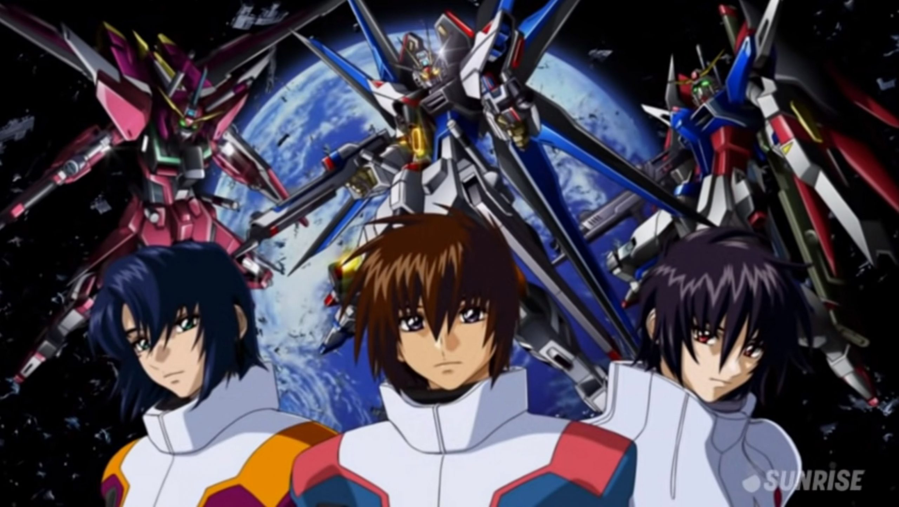

現代奇幻的風格，以及各種酷炫的火焰，還有每個角色都擁有獨特的自在式。 每個火霧戰士都還有屬於自己的別名，讓人對角色更有印象。
青少年時期的我，最愛的色色的動漫就是出包!! 梨斗各種神摔帶來的福利真的超養眼。 每個角色也都有自己鮮明的個性，在這部后宮動漫中每個角色都讓人難以忘懷。
鋼彈是許多男生的夢，我也不例外。 眾多鋼彈系列中我獨愛SEED系列，因為他酷炫的機體，以及讓我印象深刻的音樂，再加上感人的劇情，讓我回顧了好幾次。 